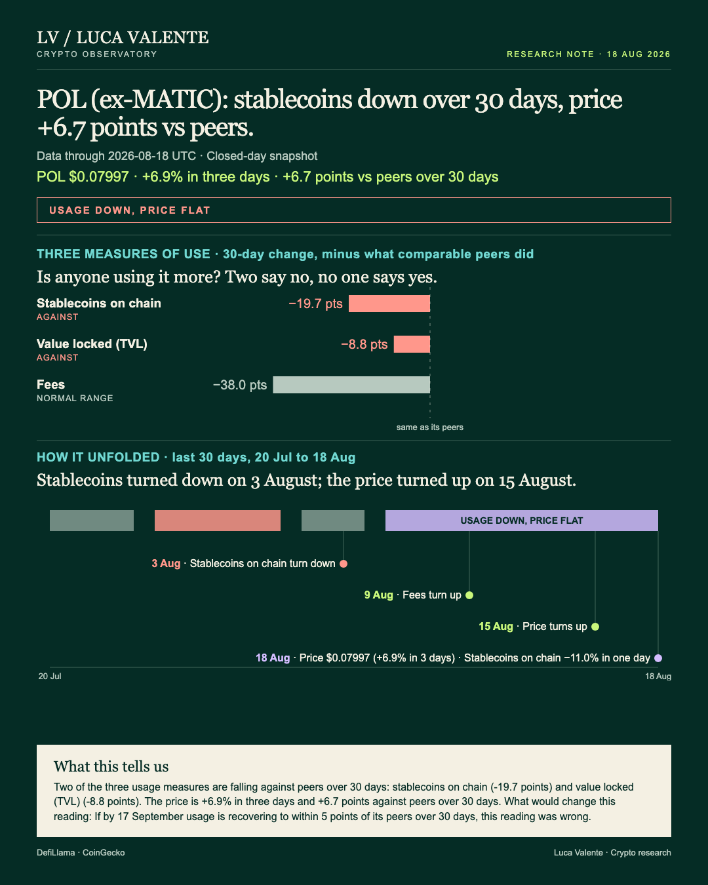
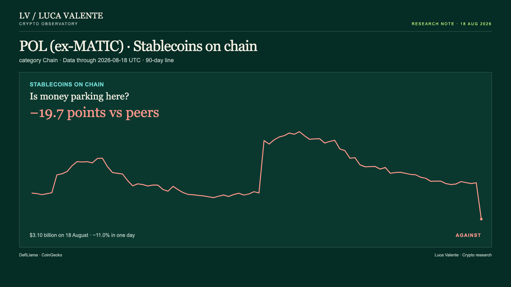
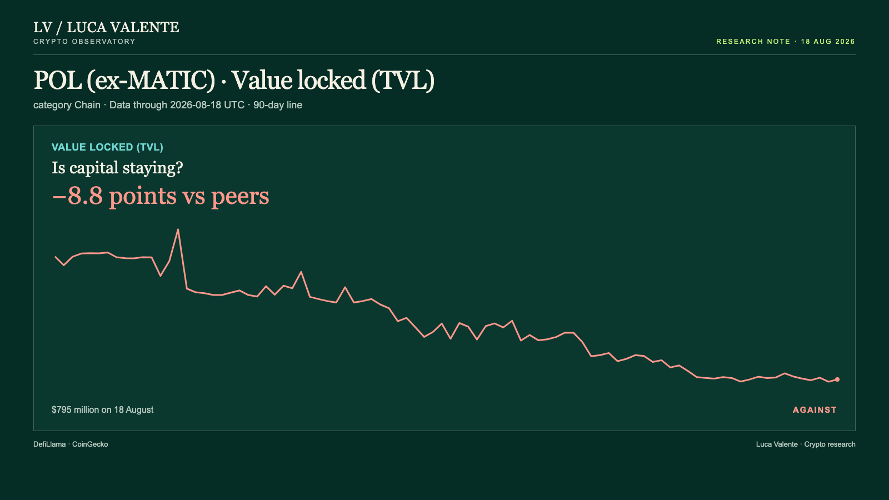

Training note, written on 23 September 2026 from data as of 18 August 2026. Not part of the published series.
Usage is fading on Polygon. The price just did not notice.

A single day pulled Polygon's numbers apart: price up, stablecoins on the chain down, both on 18 August. That matters for anyone who only saw the 6.9% price jump: the money sitting in stablecoins on the chain fell 11.0% that same day, a bigger move in the other direction.
Polygon is one of the blockchains built to move money and run apps more cheaply than Ethereum itself, and POL, formerly MATIC, is the token that secures it. Whoever was buying POL that day was buying while the usage numbers moved the other way. Net of what comparable chains did over the same 30 days, the price sits 6.7 points ahead of its group. That is the strongest case against reading this chain as quietly losing ground, so it comes first.
Its price is not up over the full 30 days. It fell 1.3% gross, from $0.08101 on 19 July to $0.07997 on 18 August, and still finished ahead of its peers because the group did worse. This surprised me: on the one day with a clean, sharp usage move, the price moved by more, in the opposite direction. Stablecoins on the chain fell 11.0% that same day, the day the price jumped.
Daily fees, what people pay to use the chain, stood at $63,414 on 18 August, down 1.8% from the day before. The 30-day change is a 27.9% drop, and against a 10.1% median gain across the 34 entities in its category, the net difference comes to 38.0 points. Fees on this chain have swung between $57,491 and $112,669 over the last 90 days, and the latest reading sits inside that range. Most of that drop looks like the range this measure already moves in.
Coins pegged to the dollar and held on the chain, referred to here as stablecoins on chain, closed at $3.10 billion on 18 August, after that single-day drop of 11.0%. The 30-day change is a 21.0% drop, well past the -1.3% median across 33 entities in the same category, a 19.7-point net gap. This one carries more weight than the fee number. Stablecoins on the chain ranged between $3.10 billion and $4.03 billion across the last 90 days, and 18 August sits at the low end of that range, not a mid-range reading. That is the clearest sign here that money is leaving, not resting.

Capital parked in the chain's applications, tracked as value locked, totalled $795 million on 18 August, up 0.8% on the day before. The 30-day change is a 14.8% drop, against a -6.0% median across 36 entities in the category, an 8.8-point net gap. The 90-day range runs from a high of $1.24 billion on 4 June down to a low of $788 million on 17 August; at $795 million, it is sitting close to that low. It points the same way as stablecoins, even if the gap against peers is smaller.

Sequence, not size, is the interesting part of this data. Stablecoins on the chain were the first to move, drifting lower from 3 August and posting declines on 12 of the following 16 days. Fees came next, climbing on 6 of the 10 days that started 9 August. Value locked followed, slipping from 13 August and falling on 4 of the next 6 days. The price turned up last, on 15 August, climbing on 3 of the 4 days since, up 6.9% on 18 August alone.
This chain's stablecoin drop on 18 August is not unusual for chains this size. Since September 2025, 110 one-day drops at least this large have hit 22 other chains now in the same group, plus two more that have since left it. A week later, stablecoins were back at or above where they stood on the day of the move in 60 of those 110 group cases, and in the one case this chain itself had, on 2 October 2025. A month later the group's record is thinner, 53 of 108 (two of the 110 have not reached a month yet), while the one Polygon case again recovered. One case is not a pattern: the group looks close to a coin flip on recovery within a month, and Polygon has no track record of its own either way.
Three things are not tracked here for Polygon, and are worth naming. Trading volume, rollup transaction counts and developer commit activity are not tracked for this entity. There is also no measure of users or wallets: the usage numbers here are fees, stablecoins on the chain and value locked, nothing more. There is no news and no stated reason behind any of these moves in what I have; any explanation beyond the numbers would be mine, not the data's.
Here is the test, set out now rather than saved for the last line. If by 17 September usage is recovering to within 5 points of its peers over 30 days, this reading was wrong. That is a high bar for a chain that just posted its steepest stablecoin drop of the quarter, and I do not expect that to happen by then.
My read is usage eroding under a price that got ahead of it for a few days, not the other way around. The 6.7-point net advantage POL holds over its peers over the last 30 days keeps me from calling it settled. Whoever bought into that move had a case, even if it is not the case the other three numbers make.
Sources: DefiLlama, CoinGecko.
Peer group: 37 chains tracked by DefiLlama. 'Net of the group' is the 30-day change minus the group's median.
Not financial advice. This is a research note based on public on-chain data.